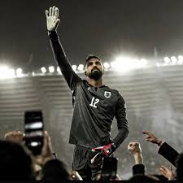
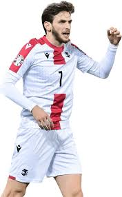

My favourite sport is football. And of course my favorite international team is Georgia.
.jpg)
Giorgi Mamardashvili is my favourite player from our team. (Georgian: გიორგი მამარდაშვილი, romanized: giorgi mamardashvili; born 29 September 2000) is a Georgian professional footballer who plays as a goalkeeper for La Liga club Valencia and the Georgia national team. Mamardashvili spent much of his youth years at Dinamo Tbilisi. After signing a professional contract with this club, he was loaned to other Erovnuli Liga teams for three seasons before his transfer to Valencia. He has quickly established himself as a first-choice shot-stopper, becoming the first ever Georgian goalkeeper in the Spanish top tier.
Khvicha "Kvara" Kvaratskhelia (Georgian: ხვიჩა კვარაცხელია; born 12 February 2001)[4] is a Georgian professional footballer who plays as a winger for Serie A club Napoli and the Georgia national team. Kvaratskhelia started his senior career playing for Dinamo Tbilisi at age 16, before departing to Rustavi where he spent half a season. During his combined three-year tenure at Lokomotiv Moscow and Rubin Kazan, Kvaratskhelia won two consecutive Russian Premier League Best Young Player awards. Following a short spell at Dinamo Batumi, Kvaratskhelia signed for Napoli in 2022, and in his debut season helped the club to reach the quarter-final of the UEFA Champions League for the first time ever, and win a first Serie A title in 33 years, finishing as the league's top assist provider. This saw him named Serie A Most Valuable Player and the Champions League's Young Player of the Season. Widely regarded as one of the best Georgian players of all time, Kvaratskhelia established himself for Georgia in all national youth teams, becoming a key player under different managers. He then became an integral part of the senior team after making his debut in 2019, and helped Georgia qualify for UEFA Euro 2024, the country's first ever major international tournament.
Zuriko "Zuka" Davitashvili (Georgian: ზურიკო დავითაშვილი, romanized: zurik'o davitashvili; born 15 February 2001) is a Georgian professional footballer who plays as a left winger for Ligue 2 club Bordeaux and the Georgia national team. He also plays as an attacking midfielder. Club career Early career Davitashvili made his career debut for Dinamo Tbilisi on 29 September 2017 in a match against Kolkheti Poti. He came on the pitch in the 72nd minute. In 2018, he moved to Locomotive Tbilisi. In the same year The Guardian named Davitashvili among 60 best young players worldwide. As a distinguished player of the Georgian U17 team, he received a golden medal from the Football Federation. This acknowledgement resulted from his highly prolific performance in two qualifying rounds of 2018 European U17 championship. Being captain of the team, he scored seven goals in six matches, including a poker against N.Macedonia. A year later he was named as the best young Georgian football player of the season. Russia On 29 June 2019, Davitashvili signed a three-year contract with Russian Premier League club Rubin Kazan. He made his Russian Premier League debut for Rubin on 15 July 2019 in the season opener against Lokomotiv Moscow, as a starter. UEFA included Zuriko Davitashvili in the list of fifty young talents in early 2020. On 20 August 2020, Davitashvili joined Rotor Volgograd on loan for the 2020-21 season. On 16 July 2021, his contract with Rubin was terminated by mutual consent. Four days later, he signed for Arsenal Tula.
.jpg)